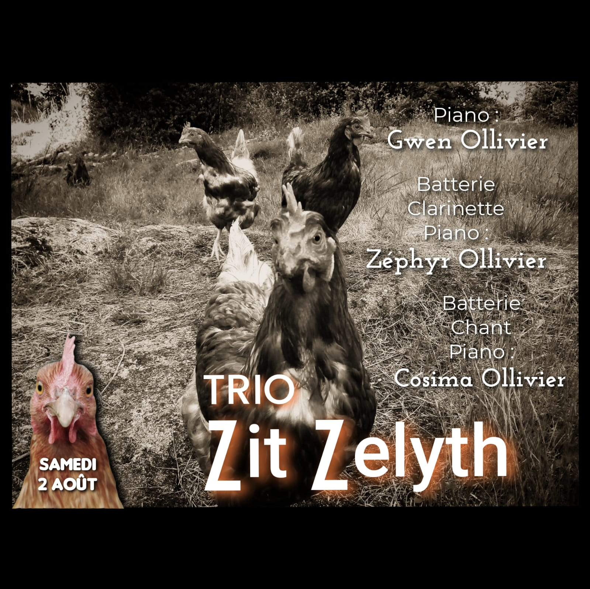

Trio · Familial
Trio familial composé de Gwen au piano, et de ses deux enfants : Zéphyr, 14 ans, à la batterie et clarinette, et Cosima, 9 ans, au chant et batterie.
Dès leur plus jeune âge, Gwen leur a transmis la musique comme première langue. Ensemble, ils jouent de la musique comme on joue à des jeux, s'échangeant leurs instruments, embarquant avec eux leur public.
Après plus de 200 concerts ensemble, à sillonner la France, les revoilà présentant leur répertoire allant du swing à la musique latine en passant par quelques chansons françaises d'époque.
